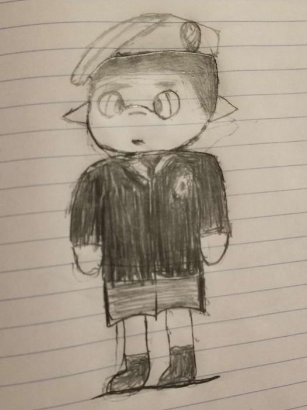
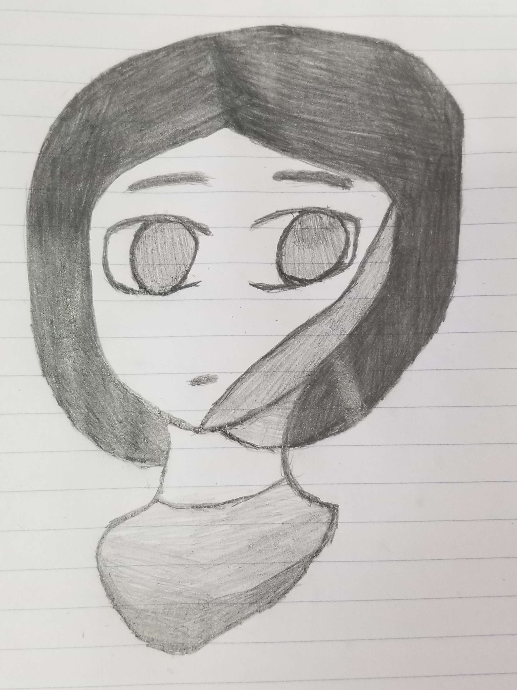
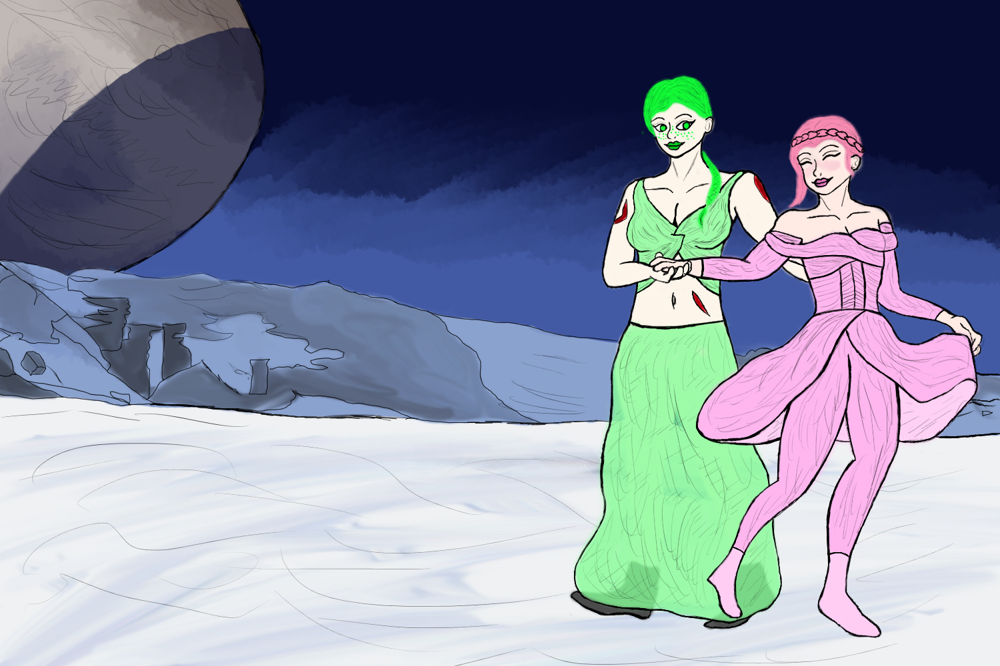

About Me!
Hello! My name is Sullivan Arnold. I am an artist, gamer, and a game developer in training. I am currently at college studying in Game Design and have made three games already: Suits, True Heroes, and King of Villany. As stated earlier I am a gamer, the games that I play the most are Destiny 2, League of Legends, and Splatoon 3. I fell in love with games when I was just a kid with a Nintendo 2ds and a Wii. And as for my Art I will talk about that down below in the other parts.
My Start
I started doing art back in 2018 with the drawing you can see on the right here. I fell in love with a specific art style from a Splatoon artist on Tumblr going by the name of "natsukiia". Sadly, they have not been active to my knowledge since December of 2018 so it is unclear where they are now but I hope they are doing well. After they stopped posting I fell into the artstyle of my girlfriend at the time Sammantha, known as "0-astraldreams-0" on Tumblr. After that I grew with her with our art together throughout high school and things were really looking up for me!
A Roadblock
As a lot of people say, "All good things must come to an end" and the end of my relationship with Sammantha came hard. Over time with her she became more and more abusive to me and it became toxic very quickly. This was around early 2020 when this was happeneing and I felt worse and worse about my work and my passion with each abusive insult or hit against me that she took. Then in March of 2020, the world took a nosedive and went under lockdown. That moment was the lowest point of my life I have ever experienced so far. But it provided me with an oputunity, so I took the lockdown to end the relationship with Sammantha. After that moment, I felt a new wave of inspiration. I was no longer bound to her and developing her art style so after that moment I started working more and more on developing my own style of art and creating characters and stories. Some of those stories and characters are still being developed and built upon to this day and you can see some of them when looking at my work with a sharp eye.
A Bright Future
Right now I feel like I am rising with my art ability with each drawing I work on! Recently I have started to draw digitally and work on that most of the time so I can get proficient in it. And soon I will be starting to make digital games for people around the world to play. But my big goal with all this is to get a career with either Bungie with Destiny 2 or other projects or with Riot Games and their teams. I have admired their work for years and I hope to join them and be a part of their wonderful teams of people.